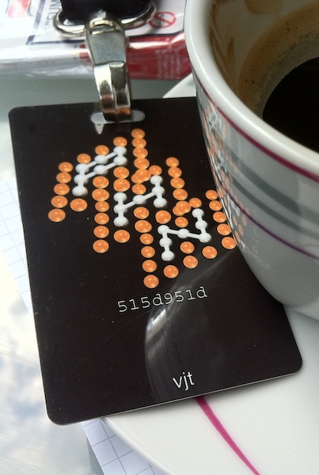

Articles tagged “security”
PH-Neutral 0x7db
“If it is good, they stop making it”, the payoff printed on the conference necklaces, distributed to every participant, along with an über-l33t badge customized with our nickname and the key hash.

Being my first experience at an international security conf (I’ve only been to the ccc2k+7 camp), and being a ph outsider ‘cause I never participated to previous editions, the boot keynote held by FX, staffer and frontman, has been enlightening: “you ought to be here!”, he yelled while pointing at the stage, wearing a white shirt with the Phenoelit logo printed on both arms.
“This conference has never started on time”, he continued, “so there was no reason to do that for this last one”. the schedule is straightforward: party, the next days talks from 12.00PM to 7.30PM, then party, and the last days talks from 12.00PM to 5.30PM. definitely a setup well-playing with the available alcohol :-D.
Afterwards, another speaker informed us that the wi-fi access keys we received at the registration allows us to use a 6 APs/3 repeaters beast driven by an OpenBSD box – they want the audience to hack it because, well, “you are the Worst Case Scenario.” :-)
On the iPhone PDF and kernel exploit
As most of you already know, there are two open, critical vulnerabilities in iPhone OS versions from 3.x up. The first one resides in the Compact Font Format component of the PDF renderer and the second one an error in the kernel, allowing attackers to bypass the sandbox (SeatBelt) inside which applications are run on the iPhone.
The two vulnerabilities were discovered by @comex, @chpwn and other people.
Only few weeks later the .lnk design flaw on windows (guys, you’re using LoadLibraryW to load a damn icon!), these iPhone OS vulnerabilities are even more interesting, because of the way the release is being handled by the community and the vendor.
I spent 3 hours last night trying to find detalied information about the bug, and except confused (and propagandistic) blog posts the only bit of information is in this tweet, and in the actual pdf exploit running on jailbreakme.com. Where are the security lists posts? Where is the CVE? Even the CERT still doesn’t say anything about this vulnerability.
There’s something terribly wrong going on: the cat-and-mouse-game that is making the iphone-dev team researchers not disclose any of the vulnerabilities they find has become very dangerous for end users: an exploit that allows remote code execution and jail escape without no interaction whatsoever by the user, carried via something that’s used to consider “safe” (a PDF file) is what is called a critical hole; while the exploit that uses it is called a 0-day. It’s the first time in my life I see a 0-day packaged and distributed explicitly via a web site.
Anyway, the dev-team researchers did not have any other choice: if they had communicated with Apple prior to public disclosure, we wouldn’t have had a so easy jailbreak vector; OTOH now we have vulnerable phones and pads that can be very easily exploited by mailcious parties. It’s also funny that in order to be warned when a PDF is about to be loaded thus mitigating the risk, you should jailbreak your device and install the PDF Loading Warner afterhand.
My stand on this is that the real problem is Apple itself: they’ve crated a walled garden, outside any legislation, where they’re the absolute god and give and take whatever they want. It’s not gonna work forever. I really hope that people will understand think that it’s not the hackers’ fault, rather it’s the totalitarian companies’ fault, for not giving us control over the devices we buy from them. Hackers are only trying to liberate them, and it’s fair use under the DMCA, after all.
UPDATE 2010-10-05: I’ve posted a summary of this bug on the full-disclosure mailing list – you know, if it’s not on FD no one would think about it :-).
E-Privacy 2009: Towards Global Control
The Recipe
Ingredients
- The 2009 social environment
- A bunch of hackers
- Some competent lawyers
- A Google Spokesman
- The Big Brother Awards
- A consistent amount of paranoia
Preparation
Take the whole social environment, utterly unprepared to the media \(r)evolution happening in the last years, and let the hackers observe and talk/write about it. Bring in the lawyers, and let them recognize that “Houston! We’ve got a problem!”, whilst also they define it via lawspeak. Ask questions, and participate to interesting debates.
Now, deliver the 2007 big brother award to the Google Representative, let the sun dive in the hills, add a noticeable amount of Tuscany red wine, and get ready for the next day. Let the paranoia flow, while the hackers show how you can be traced and found via the cellular network and spied via wifi-networked cameras placed there for your safety.
Watch the undelivered Big Brother Awards 2009 sit on the speakers’ desk and suddenly put on sale on ebay, and go back home, where you read about, and watch, a video-edited interview to the italian PM.
Put everything into the fridge, and give your brain two days to metabolize it. Then write it all LOUD [ .. ]